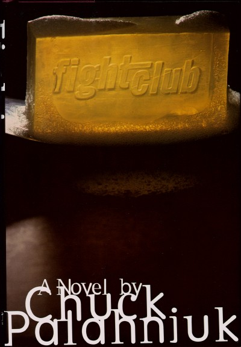

Моя вторая страница
Бойцовский клуб (роман)
«Бойцовский клуб» (англ. Fight Club) — роман американского автора Чака Паланика, выпущенный в 1996 году в США издательством «W. W. Norton & Company». В центре сюжета находится герой, страдающий бессонницей, которая вызвана неприятием общества потребления. Также причиной его недуга является недовольство тем, как понимается мужественность в американской культуре. Следуя совету своего доктора, он начинает посещать группы поддержки для больных различными заболеваниями, вследствие чего бессонница отступает. Но через некоторое время такой способ перестаёт действовать. В процессе дальнейшей борьбы с этим герой встречает таинственного человека по имени Тайлер Дёрден и создаёт подпольный бойцовский клуб как радикальную форму психотерапии[прим. 1].
Экранизация
Дэвид Финчер в 1999 году снял одноименный фильм, главные роли в котором исполнили Брэд Питт и Эдвард Нортон. Выход фильма и большое количество положительных отзывов кинокритиков подняли популярность Паланика, укрепили его позиции и позволили начать публикацию новых романов с промотурами, на которых он читал свои новые, ещё неизданные произведения.
Обложка первого американского издания книги

© Куис Дмитрий